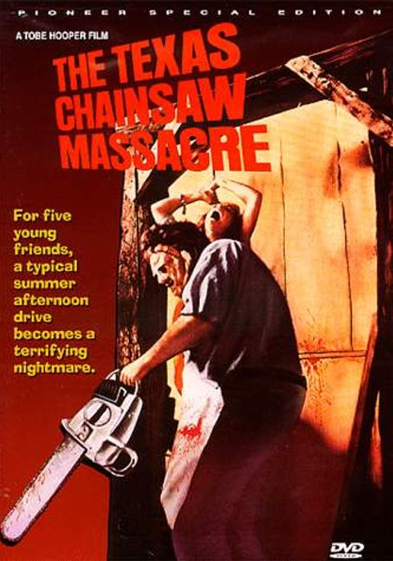

텍사스 전기톱 학살 (1974)
19 1974/10/11 (US) · 슬래셔, 포크 호러, 고어 · 1h 24m
시놉시스
누가 살아남을 것이고 그들에게 무엇이 남을 것인가?
미국에서 가장 기괴하고 잔혹한 범죄...!
감독
토브 후퍼
각본
킴 헨켈
토브 후퍼
출연
마릴린 번즈
폴 A. 파테인
알렌 댄지거
윌리엄 베일
테리 맥민
군나르 한센
제작사
볼텍스
배급사
브라이언스톤 디스트리뷰팅 컴퍼니